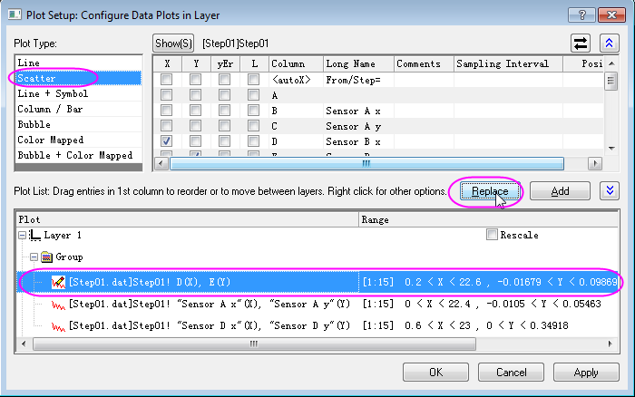

Mit dem Dialog Diagrammeinstellungen zeichnen
Plotting-using-Plot-Setup
Zusammenfassung
In diesem Tutorial wird gezeigt, wie Sie mit dem Dialog Diagrammeinstellungen eine Reihe von Zeichenaufgaben, einschließlich dem Erstellen von Diagrammen, Verändern des Diagrammtyps, Hinzufügen und Entfernen von Zeichnungen zum oder aus dem Diagramm, Gruppieren oder Auflösen von Gruppierungen und Bearbeiten des Zeichenbereichs, durchführen können.
Dieses Tutorial zeigt Ihnen, wie Sie:
- ein Liniendiagramm mit Diagrammeinstellungen erstellen,
- Zeichnungen mit Diagrammeinstellungen gruppieren und ihre Gruppierung aufheben,
- Zeichnungen mit Diagrammeinstellungen hinzufügen oder entfernen,
- den Diagrammtyp und den Anzeigebereich mit Diagrammeinstellungen ändern,
- die Zeichnungsreihenfolge mit Diagrammeinstellungen ändern,
- Zeichnungen mit mehreren Feldern mit Diagrammeinstellungen erstellen,
Liniendiagramm mit Diagrammeinstellungen erstellen
- Öffnen Sie ein leeres Arbeitsblatt und wählen Sie im Menü Daten: Aus Datei importieren: Einzelnes ASCII oder klicken Sie auf die Schaltfläche ASCII-Datendatei , um den Dateibrowser zu öffnen.
- Wählen Sie die Datei <Origin-Installationsverzeichnis>\Samples\Curve Fitting\Step01.dat, aktivieren Sie das Kontrollkästchen Optionendialog zeigen und klicken Sie auf die Schaltfläche Öffnen, um den Dialog impASC aufzurufen.
- Klicken Sie auf die Schaltfläche OK, um die Daten in das Arbeitsblatt zu importieren.
- Kehren Sie zurück zu Ihrer Arbeitsmappe und stellen Sie sicher, dass keine Daten ausgewählt sind.
- Wählen Sie Zeichnen: Einfache 2D: Liniendiagramm und der Dialog Diagrammeinstellungen wird aufgerufen. Im mittleren Bedienfeld können Sie den Langnamen sehen, der standardmäßig angezeigt wird. Wählen Sie Spalte B (Sensor A x) als X und Spalte C (Sensor A y) als Y. Klicken Sie auf Hinzufügen, um die Zeichnung zu dem unteren Bedienfeld hinzuzufügen. Sie wird automatisch zu Layer 1 hinzugefügt. Wiederholen Sie diese Operation für Sensor B und Sensor C.
-
Zeichnungen mit Diagrammeinstellungen gruppieren und ihre Gruppierung aufheben
Als Nächstes sollen drei Zeichnungen gruppiert werden. Verwenden Sie das Diagramm aus dem vorherigen Beispiel.
- Drücken Sie Strg und wählen Sie dann alle drei Zeichnungen im unteren Bedienfeld. Klicken Sie mit der rechten Maustaste und wählen Sie Gruppieren. Diese Zeichnungen befinden sich nun unter dem Knoten Gruppe.

- Klicken Sie auf OK, um den Dialog zu schließen. Das Diagramm sollte folgendermaßen aussehen:

-
Hinweis:
- Die Operation der Zeichnungsgruppierung ermöglicht Ihnen, das Aussehen dieser gruppierten Datenzeichnungen auf der Registerkarte Gruppe des Dialogs Details Zeichnung benutzerdefiniert anzupassen.
- Um die Gruppierung der Datenzeichnung aufzulösen, können Sie wiederum im unteren Bedienfeld des Dialogs Diagrammeinstellungen zu dem Knoten Gruppe gehen, mit der rechten Maustaste klicken und die Option Gruppierung aufheben auswählen.
|
Zeichnungen mit Diagrammeinstellungen hinzufügen oder entfernen
Als Nächstes entfernen Sie die Datenzeichnung von Sensor C aus dem Diagramm und fügen dann die Datenzeichnung von Sensor D zu dem Diagramm hinzu. Verwenden Sie das Diagramm aus dem vorherigen Beispiel.
- Aktivieren Sie das Diagramm und klicken Sie dann auf Grafik: Setup Diagramm, um zurück zum Dialog Diagrammeinstellungen zu gelangen. Markieren Sie im unteren Bedienfeld die Zeichnung von Sensor C und klicken Sie dann mit der rechten Maustaste, um Entfernen auszuwählen. Klicken Sie auf Anwenden und dann auf OK, um den Dialog zu schließen. Die Zeichnung Sensor C wurde aus dem Diagramm entfernt.
- Um die Datenzeichnung von Sensor D hinzuzufügen, wählen Sie den Knoten Gruppe im unteren Bedienfeld und gehen zum oberen Bedienfeld, indem Sie auf die doppelten nach oben weisenden Pfeile oben rechts klicken. Weisen Sie Spalte H (Sensor D x) als X zu und Spalte I (Sensor D y) als Y. Klicken Sie auf Hinzufügen. Klicken Sie auf Anwenden und dann auf OK, um den Dialog zu schließen.
- Als Nächstes soll der Stil der gruppierten Zeichnung benutzerdefiniert angepasst werden. Klicken Sie doppelt auf die Zeichnung, um den Dialog Details Zeichnung zu öffnen. Gehen Sie auf Ebene der Zeichnung zur Registerkarte Linie, setzen Sie die Breite auf 3. Klicken Sie auf Anwenden und dann auf OK, um den Dialog zu schließen. Das Diagramm sollte folgendermaßen aussehen:

Anzeigebereich mit Diagrammeinstellungen ändern
- Als Nächstes modifizieren Sie den Anzeigebereich der Datenzeichnung.
- Aktivieren Sie das Diagramm und klicken Sie dann auf Grafik: Setup Diagramm, um zurück zum Dialog Diagrammeinstellungen zu gelangen. Wählen Sie die Datenzeichnung von Sensor A im unteren Bedienfeld aus. Klicken Sie auf die Zelle der Spalte Bereich. Am Ende der Zelle sollte eine rechteckige Schaltfläche angezeigt werden.
- Klicken Sie auf diese Schaltfläche. Der Dialog Bereich wird aufgerufen. Deaktivieren Sie Auto für Von und Bis. Dann geben Sie die Werte Von 1 Bis 15 ein und klicken auf OK, um den Dialog zu schließen.
- Um diesen Anzeigebereich für andere Zeichnungen anzuwenden, klicken Sie erneut mit der rechten Maustaste auf die Datenzeichnung von Sensor A und wählen Sie Bereich auf Gruppe anwenden aus.
- Sie skalieren die Zeichnung folgendermaßen neu: Aktivieren Sie das Kontrollkästchen Neu skalieren in der Zeile der Bereichsspalte von Layer 1. Klicken Sie auf Anwenden und dann auf OK, um den Dialog zu schließen.
Zeichnungsreihenfolge mit Diagrammeinstellungen ändern
Sie wollen die Zeichnungsreihenfolge dieser drei Zeichnungen ändern. Verwenden Sie das Diagramm aus dem vorherigen Beispiel.
- Aktivieren Sie das Diagramm und klicken Sie dann auf Grafik: Setup Diagramm, um zurück zum Dialog Diagrammeinstellungen zu gelangen.
- Halten Sie im unteren Bedienfeld die Maus auf die Zeichnung von Sensor B gedrückt und ziehen Sie dann die Zeichnung über Sensor A.
- Klicken Sie auf Anwenden und dann auf OK, um den Dialog zu schließen. Das Diagramm wird folgendermaßen angezeigt. Die Datenzeichnung von Sensor A befindet sich jetzt oberhalb der Zeichnung von Sensor B.

Diagrammtyp mit Diagrammeinstellungen ändern
Als Nächstes sollen diese drei Liniendiagramm in Punktdiagramme verwandelt und der Datenzeichnungsbereich geändert werden. Verwenden Sie das Diagramm aus dem vorherigen Beispiel.
- Aktivieren Sie das Diagramm und klicken Sie mit der rechten Maustaste auf das Layerindexsymbol
 in der oberen linken Ecke des Diagramms. Wählen Sie dann Setup Diagramm, um zum Dialog Diagrammeinstellungen zurückzukehren.
in der oberen linken Ecke des Diagramms. Wählen Sie dann Setup Diagramm, um zum Dialog Diagrammeinstellungen zurückzukehren.
- Wählen Sie die Datenzeichnung von Sensor B im unteren Bedienfeld und wählen Sie Punktdiagramm im Feld Diagrammtyp. Klicken Sie auf Ersetzen, um das ursprüngliche Liniendiagramm zu ersetzen. Weitere Zeichnungen in der gleichen Gruppe werden automatisch durch das Punktdiagramm ersetzt. Klicken Sie auf OK, um den Dialog zu schließen.

Zeichnungen mit mehreren Feldern mit Diagrammeinstellungen erstellen
Mit Hilfe des Dialogs Diagrammeinstellungen kann ein Diagramm mit mehreren Feldern und mehreren Zeichnungen in jedem Layer bequem erstellt werden.
- Erstellen Sie ein neues Projekt, öffnen Sie ein leeres Arbeitsblatt und wählen Sie im Menü Daten: Aus Datei importieren: Einzelnes ASCII oder klicken Sie auf die Schaltfläche ASCII-Datendatei
 , um den Dateibrowser zu öffnen.
, um den Dateibrowser zu öffnen.
- Drücken Sie Strg und wählen Sie die Dateien Step01.dat, Step02.dat, Step03.dat und Step04.dat im Ordner <Origin-Verzeichnis>\Samples\Curve Fitting\.... Klicken Sie auf Hinzufügen. Aktivieren Sie das Kontrollkästchen Optionendialog zeigen und klicken Sie auf OK, um den Dialog impASC zu öffnen.
- Setzen Sie im Zweig Importoptionen den Importmodus auf Neue Arbeitsmappen öffnen. Übernehmen Sie die anderen Standardeinstellungen und klicken Sie auf OK, um den Dialog zu schließen. Vier Arbeitsmappen, Step01.dat, Step02.dat, Step03.dat und Step04.dat werden erstellt.
- Aktivieren Sie keine Arbeitsmappe und klicken Sie auf Zeichnen > Mehrere Felder/Achsen: 4-fach, um den Dialog Diagrammeinstellungen aufzurufen.
- Klicken Sie auf den doppelten nach oben weisenden Pfeil oben rechts, um das obere Bedienfeld zu öffnen. Wählen Sie dann Arbeitsblätter im Projekt in der Auswahlliste Verfügbare Daten. Alle vier Arbeitsmappen werden im oberen Bedienfeld angezeigt.
- Verwenden Sie die Strg-Taste, um alle vier Arbeitsmappen im oberen Bedienfeld zu markieren, weisen Sie dann im mittleren Bedienfeld Spalte B (Sensor A x) als X und Spalte C (Sensor A y) als Y zu.
- Wählen Sie den Diagrammtyp Liniendiagramm und wählen Sie Layer1 im unteren Bedienfeld. Klicken Sie auf Hinzufügen. Alle Datenzeichnungen von Sensor A in diesen vier Arbeitsmappen werden zu Layer1 hinzugefügt.

- Wiederholen Sie den vorherigen Schritt, um Sensor B, Sensor C und Sensor D jeweils zu Layer2, Layer3 und Layer4 hinzuzufügen. Klicken Sie auf OK, um den Dialog zu schließen. Das Diagramm sollte folgendermaßen aussehen: